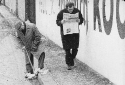

| political |
| home page |
| He studied cinematography at the German Film and Film Academy in Berlin. Since 1965 he had directed more than 70 productions belonging to very diverse categories. He is making films since 1966 in a style close to the French 'Nouvelle Vague' movement of the fifties. Politics, economy and aesthetic cross each other, and because of that his films possess a strong reflective and critical force. . |
|  |